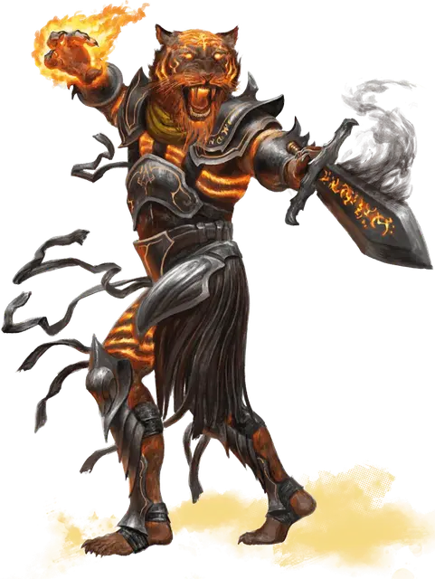

Мордакеш
Mordakhesh
Среднее Исчадие, законно-злое, именной НИП

Класс Доспеха 18 (латы)
Хиты 170 (20к8 + 80)
Скорость 40 футов
| мод | спас | ||
|---|---|---|---|
| СИЛ | 20 | +5 | +10 |
| ЛОВ | 16 | +3 | +3 |
| ТЕЛ | 18 | +4 | +9 |
| мод | спас | ||
|---|---|---|---|
| ИНТ | 15 | +2 | +2 |
| МДР | 17 | +3 | +8 |
| ХАР | 20 | +5 | +10 |
Навыки Атлетика +10, Восприятие +8, Проницательность +8, Убеждение +10
Уязвимость к урону колющий от магического оружия, которым вооружены добрые существа
Сопротивление урону дробящий, колющий, рубящий от немагических атак, кроме нанесённых посеребрённым оружием
Чувства тёмное зрение 60 футов, пассивное Восприятие 18
Языки Общий, Инфернальный
Опасность 15 (13000 опыта)
Бонус мастерства +5
Особенности
Врожденное колдовство. Базовой характеристикой Мордакеша является Харизма (Сл спасброска от заклинания 18, +10 к попаданию атаками заклинаниями). Он может накладывать следующие заклинания, не нуждаясь в материальных компонентах:
• Неограниченно: цветной шарик [chromatic orb] (см "Действие" ниже), обнаружение мыслей [detect thoughts], маскировка [disguise self]
• 1/день каждое: изгоняющая кара [banishing smite], разрушительная волна [destructive wave], полёт [fly], множественное внушение [mass suggestion], оглушающая кара [staggering smite], внушение [suggestion], истинное зрение [true seeing].
Ограниченный иммунитет к магии. Мордакеш не может быть поражен или обнаружен заклинаниями 6-го уровня или ниже, если он этого не хочет. Мордакеш совершает с преимуществом спасброски против всех остальных заклинаний и магических эффектов.
Действия
Мультиатака. Мордакеш совершает три атаки своим двуручным мечом.
Двуручный меч. Рукопашная атака оружием: +10 к попаданию, досягаемость 5 футов., одна цель. Попадание: 12 (2к6 + 5) рубящего урона плюс 5 (1к10) урона силовым полем.
Цветной шарик. Дальнобойная атака заклинанием: +10 к попаданию, дистанция 120 футов, одно существо. Попадание: 13 (3к8) урон типа, выбранного Мордакешем: кислота, холод, огонь, электричество, яд или звук.
Легендарные действия
Мордакеш может использовать 3 легендарных действия. Одновременно может использоваться только одно легендарное действие и только в конце хода другого существа. Мордакеш восстанавливает легендарные действия в начале каждого своего хода.
Атака. Мордакеш совершает одну атаку оружием или накладывает цветной шарик [chromatic orb].
Хроматическое сопротивление. Мордакеш получает сопротивление к одному типу урона на свой выбор - кислоте, холоду, огню, электричеству, яду или звуку до начала своего следующего хода.
Приказ военачальника (стоит 2 действия). Мордакеш нацеливается на двух союзников, которых видит в радиусе 30 футов. Если цель может видеть и слышать его, то она может совершить одну атаку оружием в качестве реакции и получить преимущество на этот бросок атаки.
Описание
В эпоху, когда демоны и драконы вели войны по всему Эберрону, ракшасы служили дьявольским лордам в качестве стратегов и генералов. Ракшас по имени Мордакеш поднялся по служебной лестнице и стал одним из величайших военачальников своего времени, специалистом по уничтожению драконов. За это он получил прозвище Меч Тени, а также легендарную репутацию существа, оставляющего после себя только смерть .
Мордакеш служит " говорящим " своего заключенного учителя, Рак Тулкеша, и он стремится освободить своего Господина, омывая мир кровью. Подобно пауку с множеством паутин, он имеет агентов и пешек (которых он называет своими "когтями"), в армиях по всему Кхорвайру. Самая значительная из них - орда варваров, которую он собирает в Демонических пустошах, - воины, которые угрожают ворваться в Аундаир на волне крови.
Многие ужасы Последней Войны были спровоцированы или, по крайней мере, поощрялись сторонниками Мордакеша, и его когти, как известно, совершили некоторые из самых жестоких убийств в этом конфликте. Никто не знает, как далеко простираются влияние Меча Теней и какие армии Кхорвайра служат ему.